协程、Goroutine 与异步编程：用不同抽象描述计算图
课程：2026 春季学期《操作系统原理》
讲师：蒋炎岩（jyy）
官方课程主页：https://jyywiki.cn/OS/2026/
官方讲义：https://jyywiki.cn/OS/2026/lect19.md
视频来源：Bilibili BV1dVRdBpEze
版权说明：课程讲义与幻灯片归蒋炎岩所有，采用 Creative Commons BY-NC 4.0 许可；本电子书是对课堂讲授的书面化重构，保留出处与许可说明。
导语：并行编程真正要描述的是计算图
(参考时间: 00:00)
前几讲逐步引入了并发程序、互斥、同步、并发 bug 和并行数据结构。贯穿这些内容的核心概念一直是计算图：
- 节点表示计算；
- 有向边表示依赖；
- 独立节点可以并行；
- 有依赖的节点必须满足先后顺序。
这一讲进一步追问：
能否让“创建一个计算节点”的代价接近一次函数调用，同时保留线程编程的直觉？
课程从两个方向给出答案：
- 轻量化线程：协程与 goroutine，把创建、切换和同步成本降下来；
- 在语言中描述计算图：Promise、Future、
async/await，让程序直接表达异步依赖。
flowchart LR
A["计算图"] --> B["轻量化线程"]
A --> C["语言级异步模型"]
B --> D["Coroutine / Goroutine"]
C --> E["Promise / async / await"]
D --> F["像线程一样书写"]
E --> G["像顺序代码一样描述依赖"]
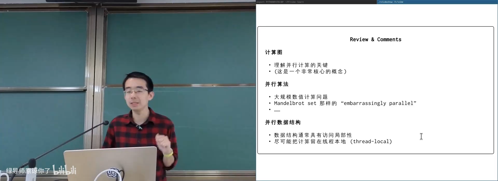
📷 从并发控制过渡到协程与异步编程
回到原视频 (00:00:20)
1. 性能优化必须从真实 workload 出发
1.1 不要做脱离 workload 的优化
(参考时间: 00:01)
讲师首先回顾上节课的 malloc/free：
- 一把大锁可以保证正确性，并轻松通过功能测试；
- 但高并发测试会暴露扩展性问题；
- 优化不能凭直觉，必须先理解真实请求的分布。
Premature optimization is the root of all evil.
—— D. E. Knuth
算法课通常关心人为构造的最坏情况，而实际系统更关心真实 workload 下的整体表现。讲师提到，攻击者也可能故意制造最坏输入。例如，精心构造一批哈希键，让它们映射到同一个 bucket，就能让服务退化，这是复杂性攻击的一种形式。
flowchart TD
A["真实 workload"] --> B["对象大小 / 生命周期分布"]
A --> C["请求与操作频率"]
B --> D["选择数据结构与同步策略"]
C --> D
D --> E["测量性能"]
E --> F{"达到目标？"}
F -- "否" --> A
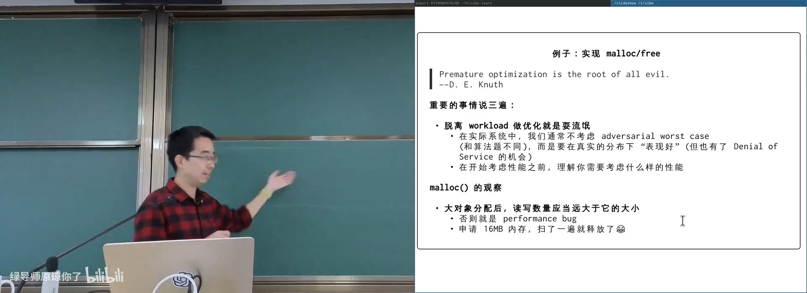
📷 脱离真实工作负载讨论性能优化
回到原视频 (00:03:30)
1.2 大对象与小对象的行为完全不同
(参考时间: 00:04)
对 malloc/free 的第一个观察是：
- 大对象通常会被反复读写；
- 如果申请 100 MB，却只访问几个字节就释放，这通常是 performance bug；
- 小对象创建频繁、生命周期短；
- 大对象数量少、生命周期长，往往服务于全局状态或长期缓冲区。
因此，真正需要优化的是小对象分配与回收的扩展性。
讲师用“桌子上的钥匙”作类比：如果某个 slab 主要由当前线程使用，那么线程拿自己桌上的钥匙几乎没有竞争；只有对象跨线程传递时，其他线程才可能来抢这把钥匙。
flowchart TD
A["对象越小"] --> B["创建 / 回收越频繁"]
B --> C["小对象分配成为主要瓶颈"]
C --> D["尽量在线程本地完成"]
D --> E["大对象走独立 slow path"]
1.3 Segregated Lists 与 slab
(参考时间: 00:08)
每个线程可以持有若干 slab。一个 slab 内部再切成大小相等的对象：
thread-local slab
16B free list: [ ] -> [ ] -> [ ] -> ...
32B free list: [ ] -> [ ] -> [ ] -> ...
64B free list: [ ] -> [ ] -> [ ] -> ...
分配 17 字节时，选择不小于 17 字节的桶，从对应 free list 弹出一个块；释放时再插回链表。
- Fast path：线程本地完成，近似 O(1)；
- Slow path：本地 slab 用完，再向全局分配器或
mmap()申请新的 slab。
这种按大小分类的空闲链表就是 segregated free lists。讲师借此提醒：现有研究远多于教科书中的几种算法，真正重要的问题往往会吸引大量工程与学术优化。
flowchart LR
A["malloc(size)"] --> B{"本地对应大小有空闲块？"}
B -- "是" --> C["free list pop"]
C --> D["返回对象"]
B -- "否" --> E["slow path: 申请新 slab"]
E --> C
F["free(ptr)"] --> G["free list push"]
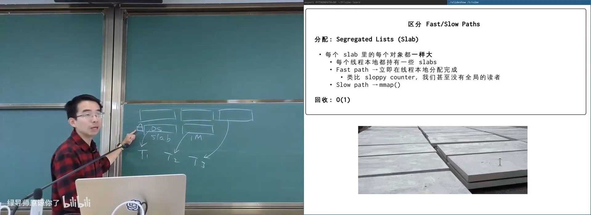
📷 每个线程维护本地 slab 以避免全局竞争
回到原视频 (00:08:40)
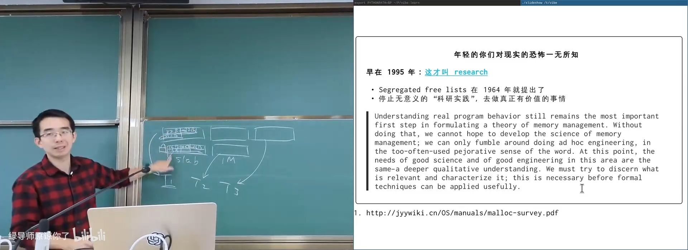
📷 Segregated Lists 将空闲对象按大小组织
回到原视频 (00:10:40)
2. 线程不是免费的
2.1 线程消耗看不见的资源
(参考时间: 00:13)
线程至少需要：
- 用户态线程栈；
- 内核中的线程、调度与统计结构；
- 线程号或其他标识资源；
- 上下文切换时保存和恢复寄存器的成本。
Linux 中线程默认可能有 8 MB 虚拟栈，但栈页按需分配，所以不会在创建时一次性占满 8 MB 物理内存。
讲师进一步回到 /proc/[pid]/：
这些文件不是“凭空存在”的，而是操作系统内部数据结构的投影。
2.2 实测一个线程的成本
(参考时间: 00:16)
可以通过一个实验估算线程成本：
- 在线程创建前记录系统资源；
- 创建大量只做少量工作的线程；
- 再记录资源变化；
- 用差值除以线程数量。
课程演示得到约 16.9 KB/线程，该数值包含内核数据结构的增长，不只是用户栈。具体数值会随内核版本和系统状态变化，但结论明确：线程有不可忽略的固定开销。
线程切换也必须进入内核：
保存当前线程寄存器
↓
选择另一个线程
↓
恢复目标线程寄存器
↓
返回用户态继续执行
flowchart TD
A["创建线程"] --> B["用户栈"]
A --> C["内核线程结构"]
A --> D["PID / 标识资源"]
E["线程切换"] --> F["进入内核"]
F --> G["保存寄存器"]
G --> H["恢复另一线程寄存器"]
H --> I["继续执行"]
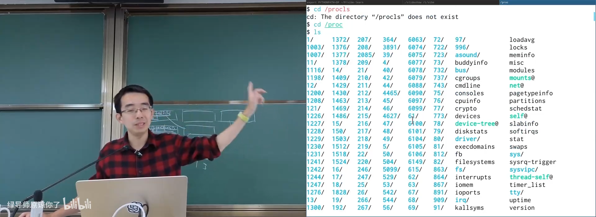
📷 线程创建实验统计系统资源变化
回到原视频 (00:14:30)
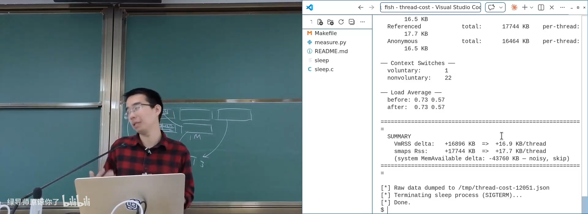
📷 创建线程带来的内核与用户态开销
回到原视频 (00:18:40)
2.3 问题：线程创建远远贵于函数调用
(参考时间: 00:20)
计算图中的每个节点本质上是一个计算，而编程语言对计算的抽象是函数。于是矛盾出现了：
- 描述计算：一次函数调用；
- 并行执行计算：创建一个线程；
- 两者成本相差巨大。
如果计算图有 100 万个细粒度节点，直接创建 100 万个线程并不可行。
flowchart LR
A["计算图节点"] --> B["函数调用抽象"]
B --> C["成本很小"]
A --> D["线程抽象"]
D --> E["创建 / 切换成本高"]
E --> F["需要人工切分"]
讲师给出两条路线：
- 让
spawn/join接近函数调用：协程、goroutine； - 改变语言执行模型，直接描述异步计算图：Promise、Future、
async/await。
t1 = spawn(f);
t2 = spawn(g);
t3 = spawn(h);
join(t1); join(t2); join(t3);
j1 = enqueue_job(f);
j2 = enqueue_job(g);
j3 = enqueue_job(h);
wait_job_complete(j1);
wait_job_complete(j2);
wait_job_complete(j3);
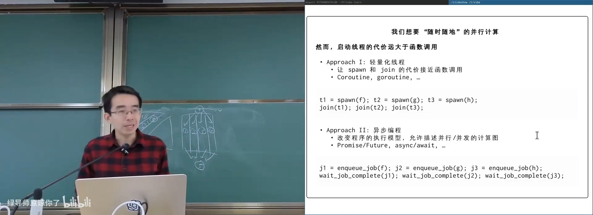
📷 线程创建与函数调用之间的成本鸿沟
回到原视频 (00:21:30)
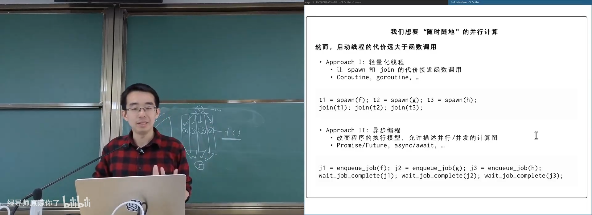
📷 轻量化线程与异步编程两条路线
回到原视频 (00:23:30)
3. 方案一：在用户空间实现协程
3.1 从 Python generator 看栈式线程
(参考时间: 00:25)
Python generator 可以在不创建新的操作系统线程时维护多个执行流：
def T_worker(i):
j = 0
while True:
yield (i, j)
j += 1
threads = [T_worker(i) for i in range(1000000)]
while True:
t = random.choice(threads)
t.send(None)
yield 会保存当前函数的执行状态，并把控制权返回给调度者；下一次 send() 再从暂停点继续。
结合 SimpleC 模型：
- 每个函数调用对应一个栈帧；
- 每个栈帧保存局部变量和程序计数器；
- 多线程程序可以看成多个独立栈；
yield相当于主动切换当前执行栈。
这和操作系统线程的行为相似，但切换完全发生在用户空间。
flowchart TD
A["Main stack"] --> B["send / yield"]
B --> C["Generator 1 state"]
B --> D["Generator 2 state"]
B --> E["Generator N state"]
C --> F["恢复局部变量与 PC"]
D --> F
E --> F
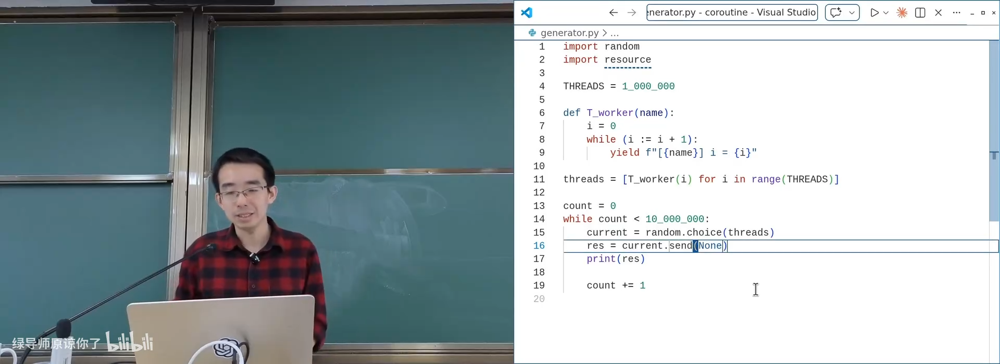
📷 一百万个 Python generator 模拟轻量级线程
回到原视频 (00:27:30)
3.2 C 中的栈切换
(参考时间: 00:30)
如果在 C 中手工实现协程，可以：
- 用
malloc为每个协程分配独立栈； - 用汇编修改栈指针；
- 用
setjmp保存寄存器现场； - 用
longjmp恢复另一个协程的现场。
void coroutine_create(...);
void coroutine_entry(...);
// local work
coroutine_yield();
只要语言支持一级函数或能够捕获局部状态，通常就能够实现无栈协程；C++20 coroutine、Python generator 都可能采用这种思路。
flowchart LR
A["Coroutine A"] -->|"yield"| B["保存寄存器与栈"]
B --> C["调度器"]
C --> D["恢复 Coroutine B"]
D -->|"yield"| B
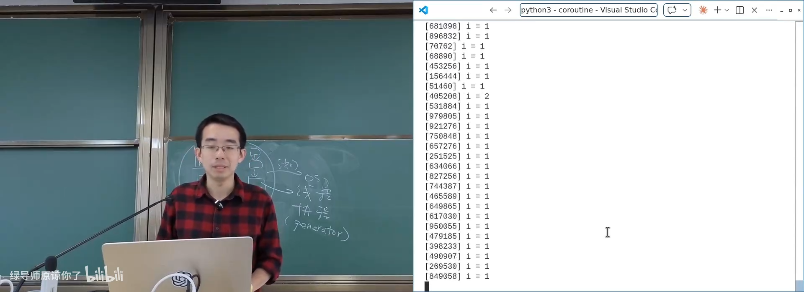
📷 用独立栈在用户态切换执行流
回到原视频 (00:30:30)
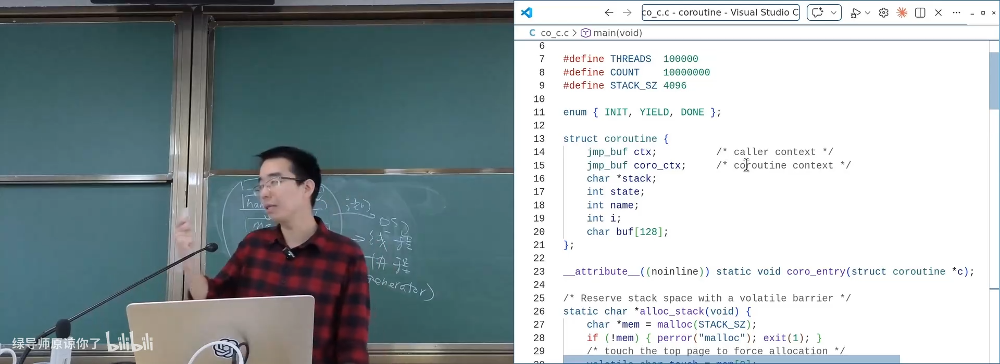
📷 setjmp / longjmp 形式的协程切换
回到原视频 (00:31:40)
3.3 协程的两个致命问题
(参考时间: 00:35)
用户态协程虽然轻量，但存在两个限制。
第一，阻塞系统调用会阻塞整个进程：
协程 T1 执行 read(fd)
↓
fd 暂时没有数据
↓
操作系统让进程睡眠
↓
T2、T3…… 全部无法运行
第二，不能直接用普通 mutex 做协程间同步：
T1: mutex_lock(&lk)
T1: yield()
T2: mutex_lock(&lk) // 阻塞整个 OS 线程
↓
T1 没有机会继续运行并 unlock
↓
AA 型死锁
问题的根源是：协程共享一个操作系统线程，而 mutex 是操作系统为线程设计的同步原语。
flowchart TD
A["T1 持有 mutex"] --> B["T1 yield"]
B --> C["T2 尝试 mutex_lock"]
C --> D["T2 阻塞 OS 线程"]
D --> E["T1 无法恢复"]
E --> F["AA 型死锁"]
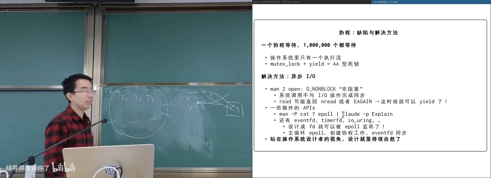
📷 一个协程阻塞会让所有协程一起等待
回到原视频 (00:35:40)
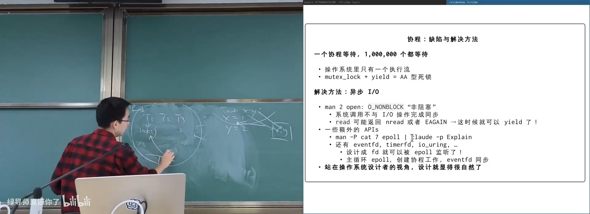
📷 mutex 与 yield 组合导致 AA 死锁
回到原视频 (00:37:20)
4. 异步 I/O：让等待变成可调度的状态
4.1 O_NONBLOCK 与 EAGAIN
(参考时间: 00:39)
解决阻塞问题的关键是把 I/O 放入非阻塞模式：
int fd = open(path, O_NONBLOCK);
ssize_t n = read(fd, buf, size);
if (n == -1 && errno == EAGAIN) {
coroutine_yield();
}
当数据尚未准备好：
- 普通阻塞
read会让当前线程睡眠； - 非阻塞
read立即返回-1/EAGAIN； - 协程可以主动让出 CPU；
- 数据准备好后再回来重试。
flowchart TD
A["read O_NONBLOCK"] --> B{"有数据？"}
B -- "是" --> C["返回 n > 0"]
B -- "否" --> D["返回 EAGAIN"]
D --> E["coroutine_yield()"]
E --> F["调度其他协程"]
F --> A
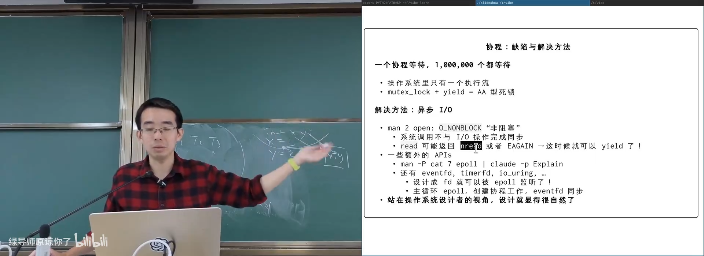
📷 非阻塞 read 返回 EAGAIN 后协程可以继续调度
回到原视频 (00:40:20)
4.2 epoll：同时监听大量文件描述符
(参考时间: 00:41)
epoll 允许一个事件循环同时等待大量文件描述符。任意一个 fd 可读、可写或出现错误，事件循环都能得到通知。
这和信号量有相似之处：
- 可以同时等待多个事件；
- 任何事件就绪都能唤醒调度器；
- 但等待对象是操作系统对象，而不是某个线程私有的 mutex。
其他对象也可以被设计成 fd：
eventfd；timerfd；signalfd；io_uring。
一旦它们都能进入 epoll，协程调度器就能统一等待 I/O、定时器和线程间通知。
flowchart LR
A["Coroutine 1"] --> E["epoll"]
B["Coroutine 2"] --> E
C["Coroutine 3"] --> E
D["Timer / eventfd / socket"] --> E
E --> F["就绪事件"]
F --> G["重新加入可运行队列"]
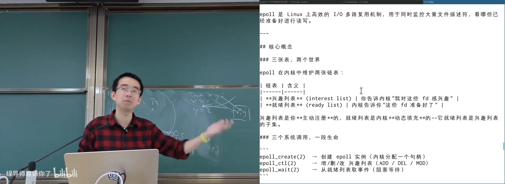
📷 epoll 统一管理大量异步 I/O 事件
回到原视频 (00:42:30)
4.3 让编译器隐藏异步复杂性
(参考时间: 00:43)
程序员希望继续写：
sleep(1);
read(fd, buf, size);
但编译器可以把它重写成：
put_my_self_into_sleep(1);
yield();
while (read_async(fd, buf, size) == -EAGAIN) {
yield();
}
也就是说：
保留同步的书写体验，把异步调度交给编译器和运行时。
这正是 goroutine 的核心思路。
flowchart LR
A["程序员写 blocking API"] --> B["编译器改写"]
B --> C["非阻塞调用"]
C --> D{"立即完成？"}
D -- "否" --> E["yield / 注册等待事件"]
E --> F["调度其他 goroutine"]
D -- "是" --> G["继续执行"]
F --> C
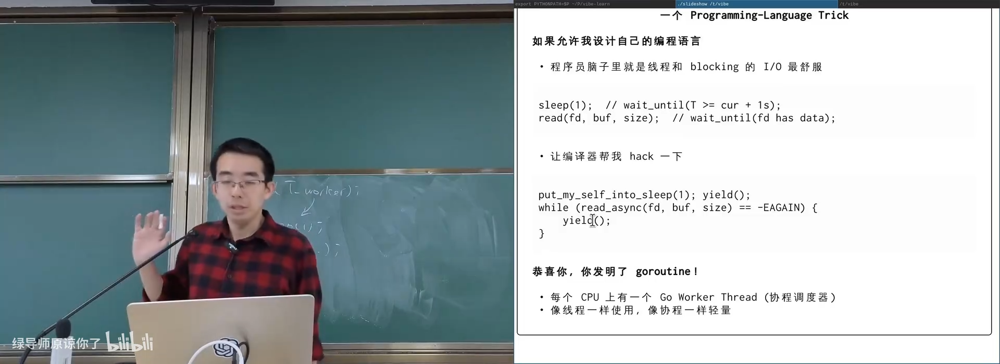
📷 编译器把同步风格代码改写为异步执行
回到原视频 (00:45:20)
5. Goroutine：像线程一样使用，像协程一样轻量
5.1 Go 运行时像一个小小的操作系统
(参考时间: 00:46)
一个 Go 程序可以有多个操作系统线程，每个线程运行一个 worker loop：
- 从可运行队列取 goroutine；
- 执行一段代码；
- 遇到阻塞 I/O 或同步点时登记等待；
- 把当前 goroutine 移出运行队列；
- 继续执行其他 goroutine。
标准库中的阻塞 API 会被运行时接管，转换为非阻塞操作并注册到事件循环。这样：
- goroutine 的创建和切换很轻量；
- 多个 goroutine 可以真正分布到多个 CPU 上并行；
- 编程模型仍然接近普通线程。
flowchart TD
Q["Goroutine 可运行队列"] --> W1["OS Worker Thread 1"]
Q --> W2["OS Worker Thread 2"]
Q --> W3["OS Worker Thread N"]
W1 --> R["Go Runtime Scheduler"]
W2 --> R
W3 --> R
R --> E["epoll / I/O 事件"]
E --> Q
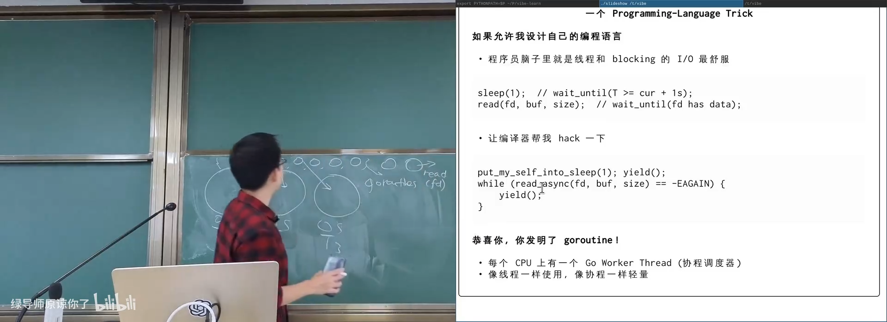
📷 Go worker thread 与 goroutine 调度器
回到原视频 (00:47:30)
5.2 通过 channel 同时完成同步与通信
(参考时间: 00:48)
Effective Go 中有一句著名原则：
Do not communicate by sharing memory; instead, share memory by communicating.
传统互斥锁、信号量和条件变量解决了同步，但数据传递仍要依赖共享内存。生产者必须先获得 buffer，再手工保护和维护 buffer。
UNIX 管道则天然表达了生产者-消费者计算图：
(cat *.txt; cat *.cpp) | wc -l
- 两个
cat产生数据； wc -l消费数据；- 管道负责数据传递；
- 阻塞和唤醒由内核完成。
Go 把这种思想引入 goroutine：
ch := make(chan int)
go func() {
ch <- 42
}()
value := <-ch
channel 既可以传递数据，也可以表达“生产完成后消费者才能继续”的依赖边。
flowchart LR
A["Producer"] -->|"send"| C["Channel"]
C -->|"receive"| B["Consumer"]
A --> D["同步"]
C --> D
B --> D
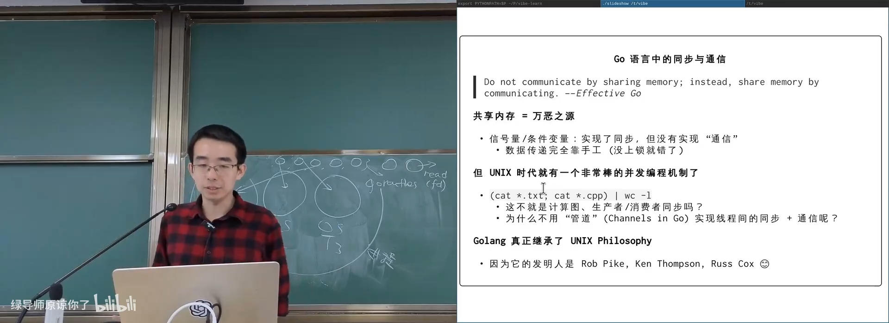
📷 UNIX 管道直接表达并发计算图
回到原视频 (00:49:40)
5.3 Mandelbrot-Go：goroutine 与 channel 的配合
(参考时间: 00:51)
课程给出一个 Go 版 Mandelbrot：
- 按图像横向条带切分工作；
- 每个 worker goroutine 计算一个区域；
- worker 完成后向
donechannel 汇报； - monitor goroutine 用
select同时监听完成消息和定时 tick； - 全部完成后再写出 PNG 文件。
示意结构：
for i := 0; i < stripes; i++ {
go worker(low[i], high[i], done)
}
go monitor(done, tick, finish)
讲师强调，goroutine 的创建成本足够低，因此代码可以更自然地把计算图直接写成 go ...。
flowchart TD
M["Main goroutine"] --> W1["Worker 1"]
M --> W2["Worker 2"]
M --> W3["Worker 3"]
W1 --> D["done channel"]
W2 --> D
W3 --> D
T["tick channel"] --> S["monitor select"]
D --> S
S --> F["finish channel"]
F --> P["写出 Mandelbrot.png"]
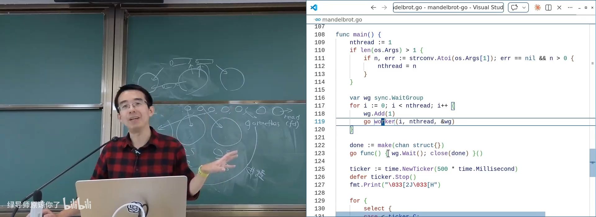
📷 Mandelbrot-Go 使用 goroutine 分块并行计算
回到原视频 (00:52:30)
6. 另一条世界线：JavaScript、Web 与异步编程
6.1 十天诞生的语言
(参考时间: 00:54)
1995 年，Brendan Eich 加入 Netscape，被要求设计一种嵌入网页的脚本语言。他在很短时间内融合了 C、Java、Scheme、Self 等语言的特征。
由于他本人更关注函数式编程，JavaScript 很早就拥有了一等函数。这成为后来回调、事件处理和 Promise 的基础。
早期 JavaScript 也留下了许多糟糕设计：
this是动态绑定的；- 宽松相等规则复杂；
- 同一个值在不同上下文中可能表现不同；
- 容易写出“看起来正确、换一个输入就出错”的代码。
但动态类型、函数作为参数等特性，也使它能够快速适应 Web 的交互需求。
flowchart LR
A["C / Java"] --> D["JavaScript"]
B["Scheme / Self"] --> D
D --> E["一等函数"]
D --> F["动态类型"]
E --> G["回调 / Promise"]
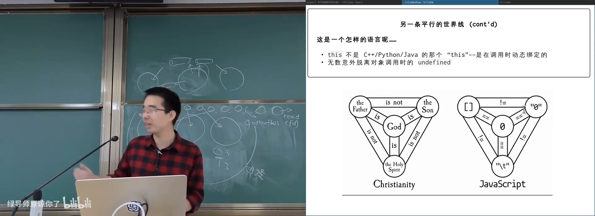
📷 JavaScript 融合多种语言设计并保留一等函数
回到原视频 (00:56:30)
6.2 Web 1.0：简单到可以直接手写请求
(参考时间: 00:57)
早期 HTTP 很朴素：
GET /index.html HTTP/1.0
Host: example.com
服务器的主要工作就是找到文件并返回文本。网页通常由 HTML、<table> 和图片拼出来，布局经常依赖切图工程师精确计算像素位置。
讲师用一个“土味页面”复刻了那个时代：
- 没有现代 CSS 布局；
- 浮动窗口和表格承担界面组织；
- 页面刷新意味着重新加载完整文档。
flowchart LR
A["浏览器发送 HTTP 文本请求"] --> B["Web Server"]
B --> C["读取 HTML 文件"]
C --> D["返回 HTML 文本"]
D --> E["浏览器渲染页面"]
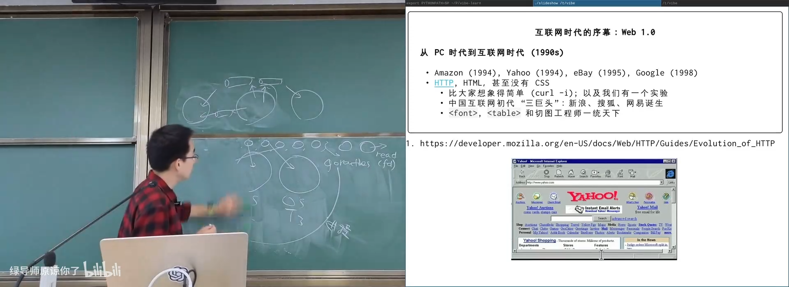
📷 早期 Web 1.0 页面由表格、图片与切图布局构成
回到原视频 (00:59:00)
6.3 XMLHttpRequest 与后台刷新
(参考时间: 00:59)
1999 年前后，XMLHttpRequest 出现。JavaScript 可以在页面不重新加载的情况下，请求服务器并把新数据写回 DOM。
这项技术后来被称为 AJAX：Asynchronous JavaScript and XML。当时后端 Java 生态大量使用 XML，所以名字中出现了 XML，而不是今天的 JSON。
flowchart TD
A["用户触发事件"] --> B["XMLHttpRequest"]
B --> C["请求后端"]
C --> D["返回 XML / 数据"]
D --> E["回调函数"]
E --> F["更新 DOM Tree"]
F --> G["页面局部刷新"]
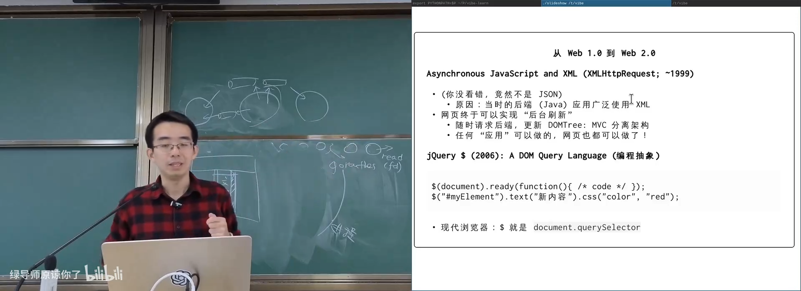
📷 XMLHttpRequest 让网页实现后台刷新
回到原视频 (01:00:20)
6.4 jQuery 与 DOM 查询抽象
(参考时间: 01:01)
jQuery 提供了简洁的 DOM 查询与修改接口：
$(document).ready(function () {
$("#myElement")
.text("新内容")
.css("color", "red");
});
现代浏览器中，$ 的能力通常可以由 document.querySelector 完成。DOM 是一棵树，CSS selector 可以在其中查询节点，再修改文本、样式或插入新的 HTML。
课程演示把一个 1990 年代风格的页面注入新样式：
页面内容不变
↓
注入现代 CSS 与少量 JavaScript
↓
圆角、输入框、按钮动画全部出现
讲师形容为“天亮了”：内容是原来的，但交互和视觉已经现代化。
flowchart LR
A["DOM Tree"] --> B["querySelector"]
B --> C["选中节点"]
C --> D["修改文本"]
C --> E["修改样式"]
C --> F["插入 / 删除节点"]
D --> G["浏览器重绘"]
E --> G
F --> G
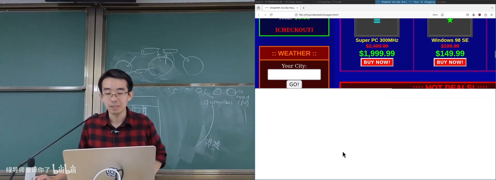
📷 通过选择器和 DOM 修改把旧网页现代化
回到原视频 (01:03:30)
7. JavaScript 的事件并发模型
7.1 Run to Completion
(参考时间: 01:05)
JavaScript 面向大量普通 Web 开发者，所以不能要求大家掌握 data race、原子性和复杂同步。它选择了一套更简单的并发模型：
- 不允许多个 JavaScript 计算节点真正并行执行；
- 没有 blocking I/O；
- 所有事件处理器按顺序进入队列；
- 一个事件一旦开始，就必须运行到完成。
事件来源包括：
- 页面加载；
- 鼠标点击；
- 键盘输入；
- 网络请求完成；
- 定时器触发。
这使每个事件处理器近似原子执行，避免了多线程共享内存中的数据竞争。但如果事件处理器死循环或计算过久，整个页面都会失去响应。
flowchart TD
A["事件进入队列"] --> B["取出一个事件"]
B --> C["执行整个 handler"]
C --> D{"handler 结束？"}
D -- "否" --> C
D -- "是" --> E["取出下一个事件"]
E --> B
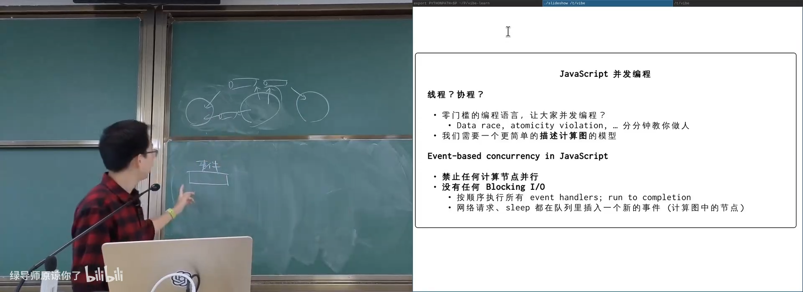
📷 事件循环按 Run to Completion 执行处理器
回到原视频 (01:07:40)
7.2 回调创建动态计算图
(参考时间: 01:08)
异步请求完成后，浏览器创建一个新事件，调用 success 或 error 回调：
$.ajax({
url: "/api/user",
success: function (user) {
$.ajax({
url: `/api/user/${user.id}/friends`,
success: function (friends) {
$.ajax({
url: `/api/friend/${friends[0].id}`,
success: function (feed) {
render(feed);
}
});
}
});
}
});
回调相当于在运行时动态创建计算图节点：
flowchart LR
A["请求 user"] --> B["success(user)"]
B --> C["请求 friends"]
C --> D["success(friends)"]
D --> E["请求 feed"]
E --> F["success(feed)"]
B --> G["error"]
D --> H["error"]
F --> I["error"]
7.3 回调地狱
(参考时间: 01:10)
问题不在于回调本身，而在于它破坏了顺序控制结构：
先请求 A
等 A 成功
再请求 B
等 B 成功
再请求 C
明明是一个顺序流程，却被拆成多层嵌套函数：
requestA(function (a) {
requestB(a, function (b) {
requestC(b, function (c) {
//...
});
});
});
每增加一步，缩进就加深一层。错误处理和局部变量也越来越难追踪。
一个顺序的计算图，被硬生生拆成了多层回调。
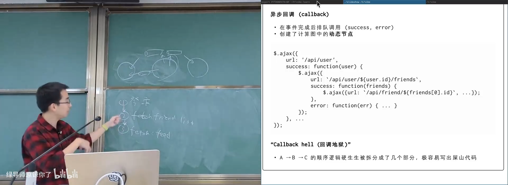
📷 多层回调导致回调地狱与维护困难
回到原视频 (01:10:40)
8. Promise：在语言中直接描述计算图
8.1 立即返回的未来结果
(参考时间: 01:12)
fetch 不会阻塞等待网络：
const promise = fetch(url);
它立即返回一个 Promise，表示“未来完成的结果”。状态会经历：
stateDiagram-v2
[*] --> Pending
Pending --> Fulfilled: 成功
Pending --> Rejected: 失败
Fulfilled --> [*]
Rejected --> [*]
Promise 可以继续组合：
fetch(url)
.then(response => response.json())
.then(data => render(data))
.catch(error => showError(error));
flowchart LR
A["fetch(url)"] --> B["Promise pending"]
B --> C["response"]
C --> D["json()"]
D --> E["data"]
E --> F["render(data)"]
B --> G["catch(error)"]
C --> G
D --> G
E --> G
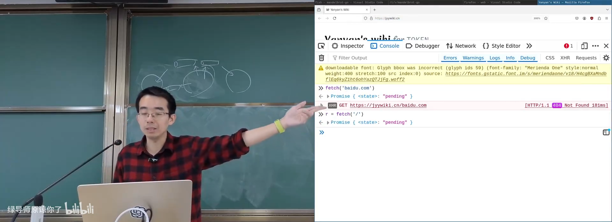
📷 fetch 返回处于 pending 状态的 Promise
回到原视频 (01:13:30)
8.2 Promise.all：语言级 join
(参考时间: 01:14)
Promise 可以组合成计算图：
Promise.all([
fetch("/api/a").then(r => r.json()),
fetch("/api/b").then(r => r.json()),
fetch("/api/c").then(r => r.json())
])
.then(results => renderAll(results))
.catch(error => showError(error));
Promise.all() 会：
- 立即返回一个新的 Promise；
- 同时启动多个异步任务；
- 等待全部成功，或在任一失败时进入错误路径。
这和线程中的 join 非常相似：
flowchart TD
A["Promise.all"] --> B1["fetch A"]
A --> B2["fetch B"]
A --> B3["fetch C"]
B1 --> C["全部完成"]
B2 --> C
B3 --> C
C --> D["then(results)"]
B1 --> E["catch(error)"]
B2 --> E
B3 --> E
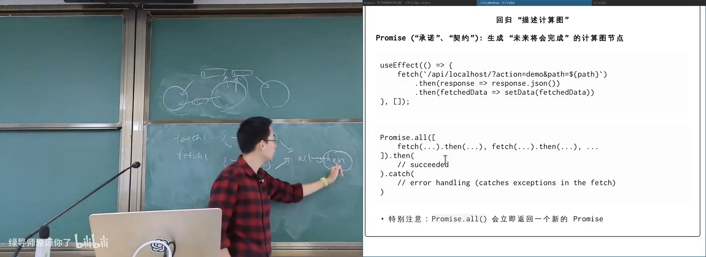
📷 Promise.all 把多个并发节点汇合为一个 join
回到原视频 (01:15:00)
9. Async/Await：保留顺序直觉
9.1 让程序员继续写同步风格
(参考时间: 01:15)
Promise 仍然要求把顺序逻辑拆成 .then() 链。更自然的方式是：
async function fetchData(token) {
const response = await fetch(
`/api/submissions/?token=${token}`
);
return response.json();
}
调用多个异步任务：
await Promise.all([
fetchData("1234"),
fetchData("5678")
]);
关键语义：
async function f()相当于返回一个 Promise；await promise等待 Promise 完成并取出值；await 1会得到1，非 Promise 值会被包装后再解析；- 编译器把顺序逻辑改写成 Promise 链。
flowchart LR
A["async function"] --> B["返回 Promise"]
C["await value"] --> D{"value 是 Promise？"}
D -- "是" --> E["等待 settlement"]
D -- "否" --> F["Promise.resolve(value)"]
E --> G["继续顺序代码"]
F --> G
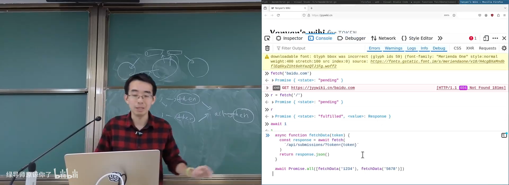
📷 async 函数由编译器包装为 Promise
回到原视频 (01:17:30)
9.2 编译器把 await 翻译成动态回调链
(参考时间: 01:17)
源代码：
let a = await f();
let b = await g(a);
let c = await h(b);
概念上可以改写为：
Promise.resolve(f())
.then(a => Promise.resolve(g(a)))
.then(b => Promise.resolve(h(b)))
.then(c => finish(c));
编译器生成的代码可能仍然是复杂的回调链，但程序员看到的始终是顺序结构：
写下：A -> await B -> await C
生成：A.then(B).then(C)
同步的写法表达异步流程，剩下的让编译器处理。
flowchart TD
A["let a = await f()"] --> B["f().then(a => ...)"]
B --> C["let b = await g(a)"]
C --> D["g(a).then(b => ...)"]
D --> E["let c = await h(b)"]
E --> F["h(b).then(c => ...)"]
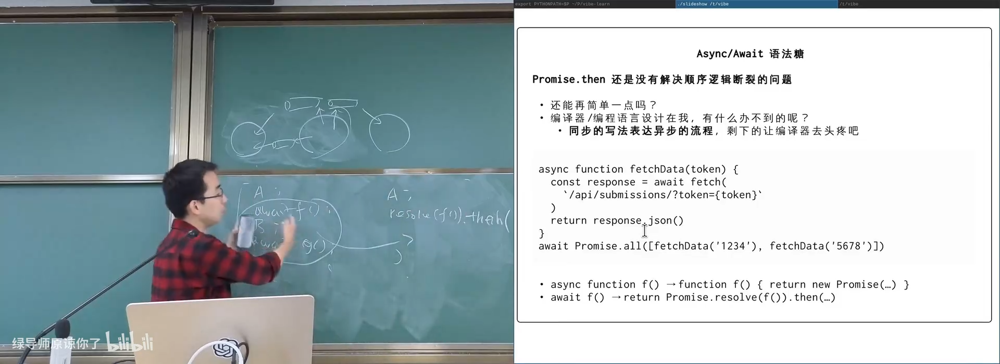
📷 await 等待多个动态创建的计算节点完成
回到原视频 (01:18:40)
10. 从浏览器到完整应用生态
(参考时间: 01:19)
JavaScript 逐渐从“十天设计的网页脚本”成长为完整应用平台：
- ES6 / ECMAScript 2015 统一了大量库和语法；
- Angular、React、Vue 形成现代前端框架；
- Express、Next、Nest 扩展到服务端；
- Electron 把网页封装成桌面应用，Visual Studio Code 是典型例子；
- Ink 允许用 React 风格构建终端界面；
- WebAssembly 把高性能代码带入浏览器；
- Mermaid、TensorFlow.js、Three.js 扩展了可视化、AI 与 3D 能力。
flowchart TD
A["HTML / CSS / DOM"] --> B["JavaScript"]
B --> C["浏览器应用"]
B --> D["Electron 桌面应用"]
B --> E["Node.js 服务端"]
B --> F["WebAssembly"]
C --> G["React / Vue / Angular"]
D --> H["VS Code"]
E --> I["Express / Next / Nest"]
F --> J["C / C++ 高性能模块"]
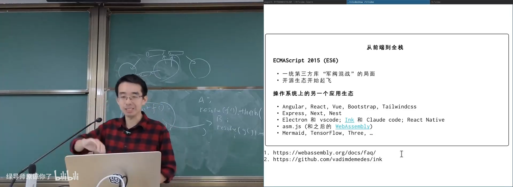
📷 JavaScript 从网页脚本成长为完整应用生态
回到原视频 (01:21:20)
11. 总结：两条路线，同一个计算图
这一讲从线程成本出发，比较了两条描述计算图的路线。
路线一：轻量化线程
- 用户态协程避免每次创建都进入内核；
yield主动切换执行流；- 阻塞 I/O 必须改造成非阻塞 + 事件等待；
epoll、eventfd、timerfd统一异步事件；- goroutine 把用户态协程调度到多个 OS worker thread；
- channel 同时完成同步与通信。
路线二：在语言中描述计算图
- 回调把异步结果变成动态计算图节点；
- 嵌套回调导致 callback hell；
- Promise 让程序直接组合未来值；
Promise.all相当于 join；async/await保留顺序结构，由编译器生成 Promise 链。
flowchart LR
A["线程创建成本高"] --> B{"选择路线"}
B --> C["轻量化线程"]
C --> D["Coroutine"]
D --> E["非阻塞 I/O + epoll"]
E --> F["Goroutine + Channel"]
B --> G["语言级异步"]
G --> H["Callback"]
H --> I["Promise"]
I --> J["Async / Await"]
F --> K["计算图"]
J --> K
两条路线的目标一致：
让程序员用接近函数调用和顺序代码的方式描述计算图，同时把昂贵的调度、等待与资源管理隐藏在运行时和语言实现中。
附：官方参考与延伸阅读
官方课程资料：
版权与署名：本讲课程材料由蒋炎岩（jyy）编写。课程讲义与幻灯片采用 Creative Commons BY-NC 4.0 许可；本电子书保留课程出处、作者署名与许可说明。